이름을 알면 부탁이 달라져요
잘 만든 사이트에서 본 움직임을 내 사이트에 넣고 싶어도, 막상 AI에게 설명하려면 막막해요. 그래서 결국 "버튼이 좀 뿅 하고, 통통 튀게 해 줘"처럼 쓰게 되죠. AI도 뭔가를 만들어 주긴 해요. 문제는 그 뿅이 내 뿅과 같은지 알 수 없다는 거예요.
아래 화면 왼쪽 점선 칸이 내가 떠올린 버튼, 오른쪽에 쌓인 세 장이 AI가 내놓을 수 있는 후보예요. 가운데 물음표가 그 사이의 간격이에요.
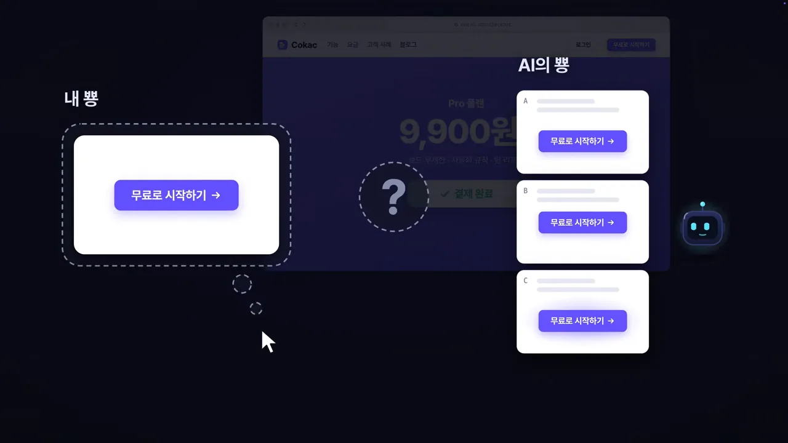
뿅에도 이름이 있어요
영상은 뿅, 스르륵, 통통, 촤르륵 같은 말 대부분에 정확한 이름이 있다고 말해요. 이름을 알면 부탁이 한 문장으로 정리돼요. 아래 화면의 입력창에는 "카드가 화면에 들어올 때, 스프링 애니메이션으로 0.4초 동안 살짝 튀어 오르게 해 줘"가 적혀 있어요. 그 위 작은 표가 이 문장을 다섯 칸으로 나눠요. 무엇이(카드), 어떻게(Spring), 얼마나 빨리(0.4s), 곡선, 언제(화면에 들어올 때)예요.
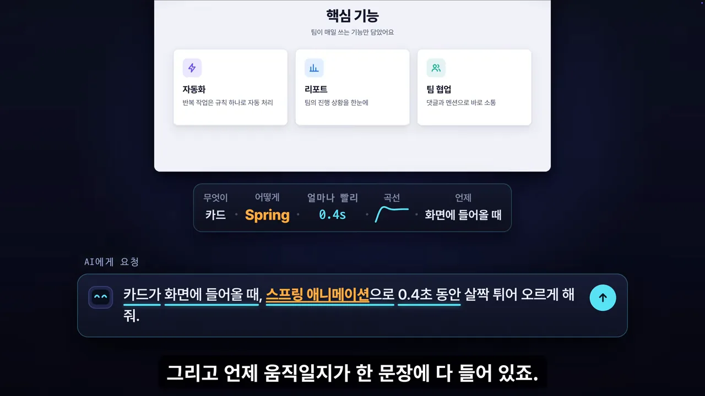
24개는 세 묶음으로 나뉘어요. 화면 위 세 카드가 그 순서예요. 01 움직임의 기본, 02 글자와 그림, 03 화면과 마우스, 각각 8개씩이에요. 이 문서도 같은 순서로 따라가요.
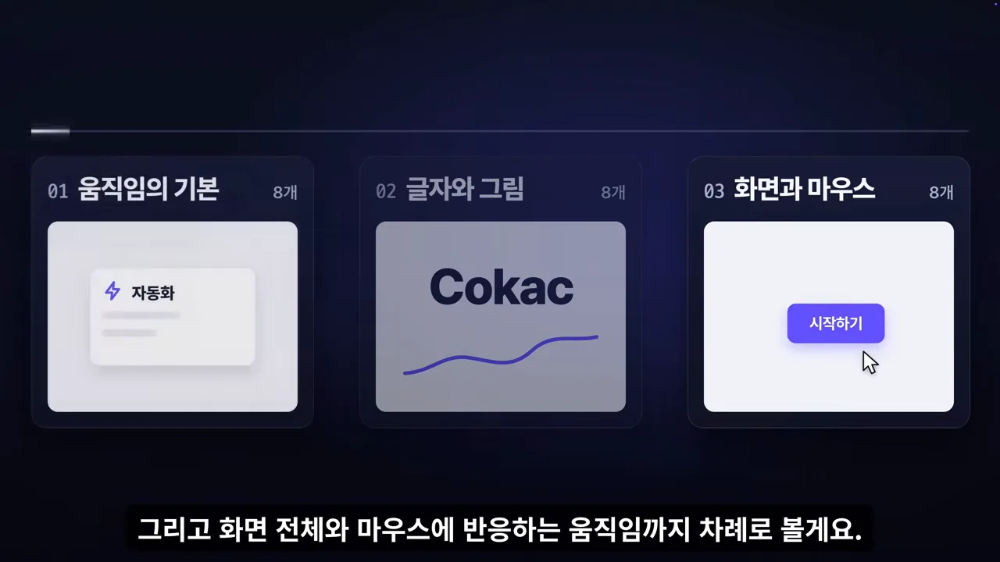
1부 움직임의 기본 8가지
모든 움직임의 바탕이 되는 8가지예요. 등장 방식(페이드·슬라이드·스케일), 속도의 결(이징·스프링·바운스), 시간(듀레이션·딜레이), 반복(루프)으로 나눠 보면 정리가 쉬워요.
페이드, 슬라이드, 스케일
페이드는 투명했던 요소가 스르륵 진해지며 나타나는 효과예요. 나타날 땐 페이드 인, 사라질 땐 페이드 아웃이라고 해요. 가장 기본이고 어디에 써도 튀지 않아요. 아래 화면은 '새 프로젝트' 모달 예시예요. 오른쪽 위 작은 칸에 이름·시간·언제가 있고, 시간 칸에 0.2s가 들어가 있어요.
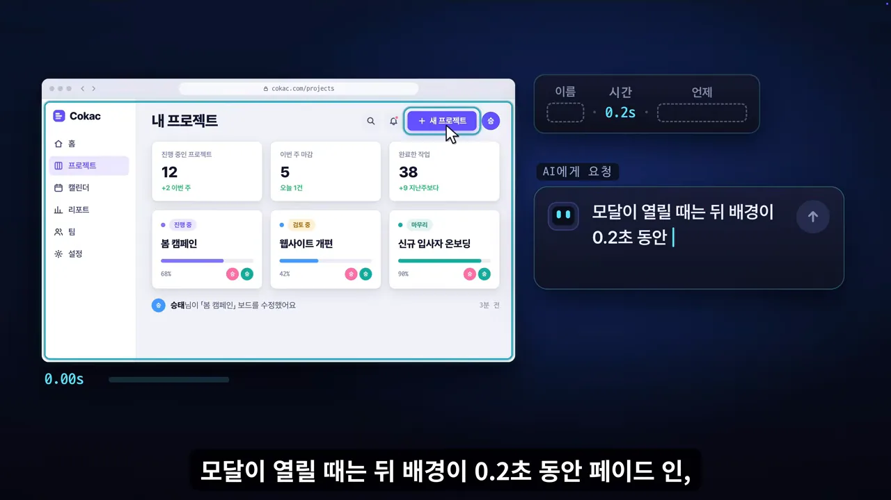
슬라이드는 화면 밖에서 미끄러져 들어오는 움직임이에요. 방향이 핵심이라 위, 아래, 옆 중 어디서 올지까지 말해야 해요. 실제로는 페이드와 섞어 아래에서 살짝 올라오며 나타나게 하는 조합을 가장 많이 써요. 영상의 예는 알림 배너가 위에서 슬라이드 다운으로 내려왔다가 3초 뒤 다시 올라가는 거예요.
스케일은 크기를 바꾸는 움직임이에요. 살짝 커졌다 제자리로 돌아오면 톡 튀어나오는 느낌이 나서 팝 효과라고도 불러요. 아래 화면에서는 장바구니 아이콘의 숫자 배지(2)가 주황 테두리로 강조돼 있어요. 오른쪽 그래프는 크기가 목표를 살짝 넘었다 내려오는 곡선이에요.
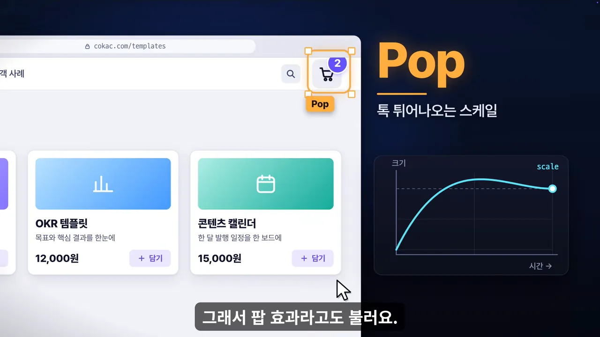
이징: 속도가 변하는 방식
같은 거리를 같은 시간 동안 움직여도 느낌이 달라요. 아래 화면 위쪽 줄은 처음부터 끝까지 같은 속도라 칸 간격이 고르고, 아래쪽 줄은 빠르게 출발해 끝에서 사뿐히 멈춰서 오른쪽 끝에 칸이 몰려 있어요. 이렇게 움직이는 동안 속도가 바뀌는 방식이 이징이에요.
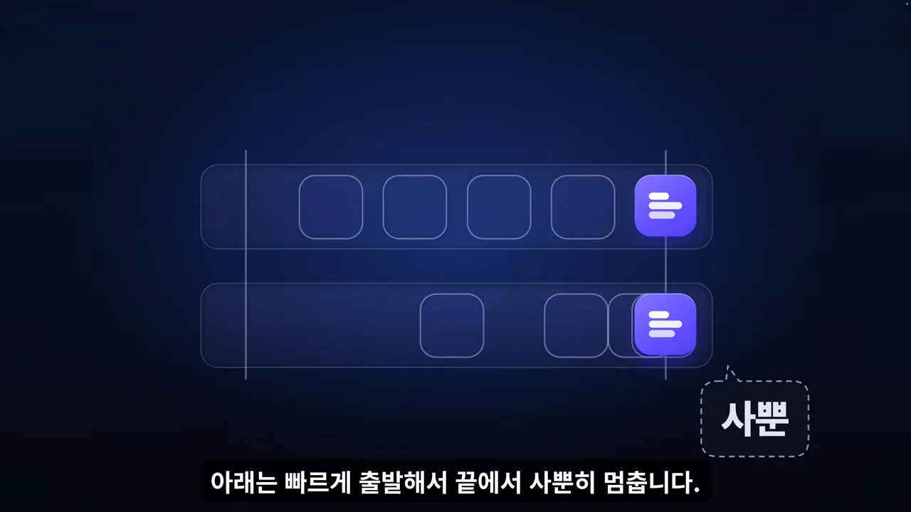
기본은 세 가지예요. 끝에서 느려지는 이즈 아웃, 천천히 출발하는 이즈 인, 둘을 합친 이즈 인 아웃이에요. 영상의 규칙은 간단해요. 화면에 들어오는 건 이즈 아웃, 나가는 건 이즈 인. 아래 화면 오른쪽 위 그래프가 '들어올 때' ease-out, 아래 그래프가 '나갈 때' ease-in이에요.
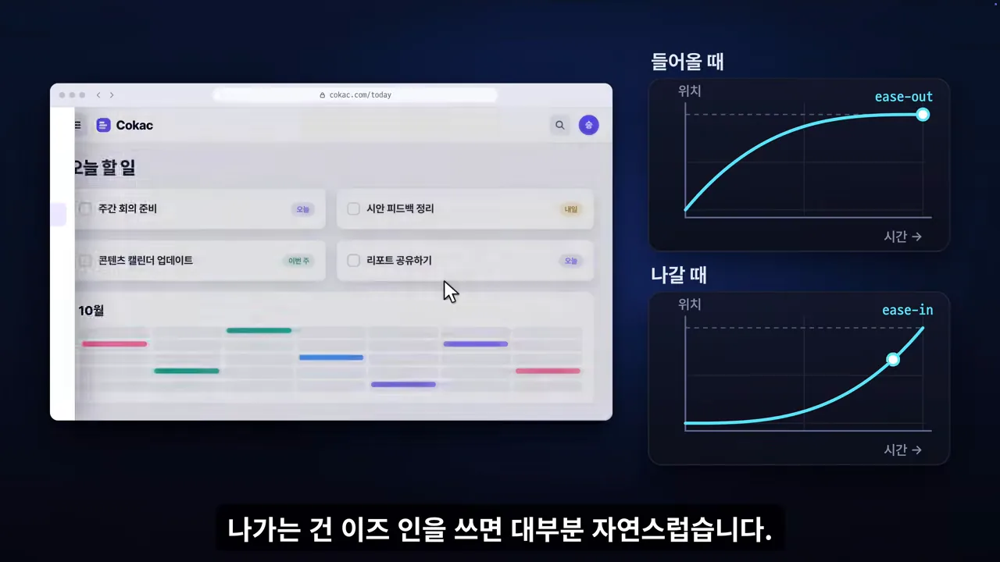
스프링과 바운스는 어떻게 달라요?
스프링은 목표 지점을 살짝 지나쳤다가 띠용 하고 돌아와 자리를 잡아요. 용수철처럼 쫀득하고 살아 있는 느낌이에요. 얼마나 출렁일지는 스티프니스와 댐핑으로 조절해요. 바운스는 공이 바닥에 떨어져 통통 튀다 멈추는 움직임이에요.
아래 화면이 둘을 나란히 보여 줘요. 왼쪽 Spring 그래프는 '목표' 점선을 넘었다가 돌아와요. 오른쪽 Bounce 그래프는 '바닥' 실선에 부딪혀 위로 튕겨요. 기준선이 위에 있느냐 아래에 있느냐가 차이예요.
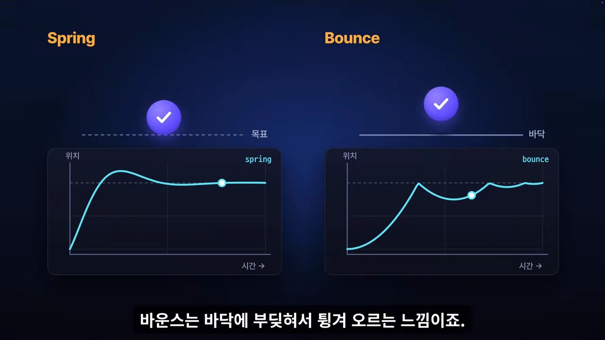
듀레이션과 딜레이: 얼마나, 언제
"빠르게", "천천히"만으로는 얼마나인지 알 수 없어요. 움직이는 데 걸리는 시간이 듀레이션, 움직이기 전에 기다리는 시간이 딜레이예요. 아래 화면은 알림 네 줄이 차례로 들어오는 타임라인이에요. 막대마다 시작점이 조금씩 밀려 있는데, 1편에서 본 스태거가 바로 이 딜레이를 차례로 준 거예요.
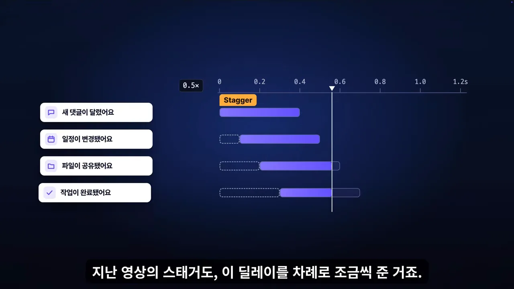
다음 화면은 이 둘을 부탁 문장으로 쓴 예예요. 제목 막대는 0초에서 바로 0.4s, 설명 막대는 0.2s 딜레이 뒤에 0.4s예요. 입력창 문장에서 '딜레이'와 '듀레이션'에 밑줄이 그어져 있어요.
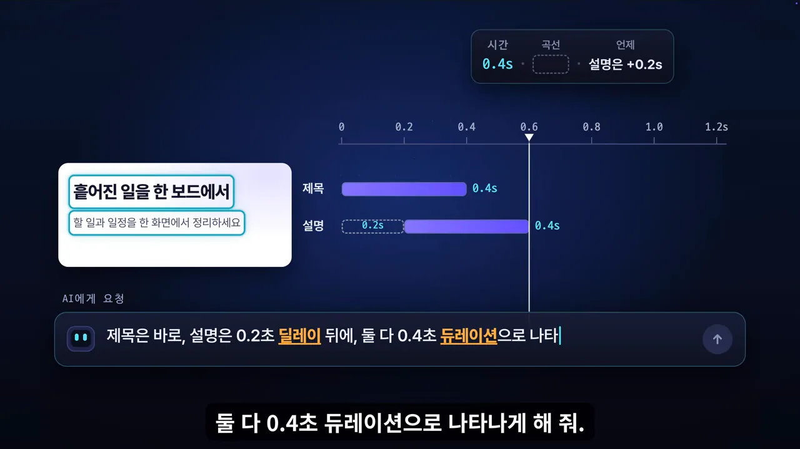
영상이 준 기준은 버튼 같은 작은 반응 0.1~0.2초, 화면에 큰 요소가 들어올 때 0.3~0.5초예요. 영상 곳곳의 부탁 예에 나온 시간을 이 기준과 함께 한 줄에 모아 보면 아래와 같아요.
루프
루프 애니메이션은 멈추지 않고 계속 반복되는 움직임이에요. 아이콘이 둥실둥실 떠 있는 효과는 플로팅이라고도 해요. 시선을 끌기엔 좋지만 여러 개가 계속 움직이면 산만해서, 꼭 필요한 한두 곳에만 쓰라고 해요. 아래 화면 왼쪽 위 칸에는 Floating · 4s · 계속 반복이 적혀 있고, 그 아래 파형 그래프 한 주기가 4s예요.
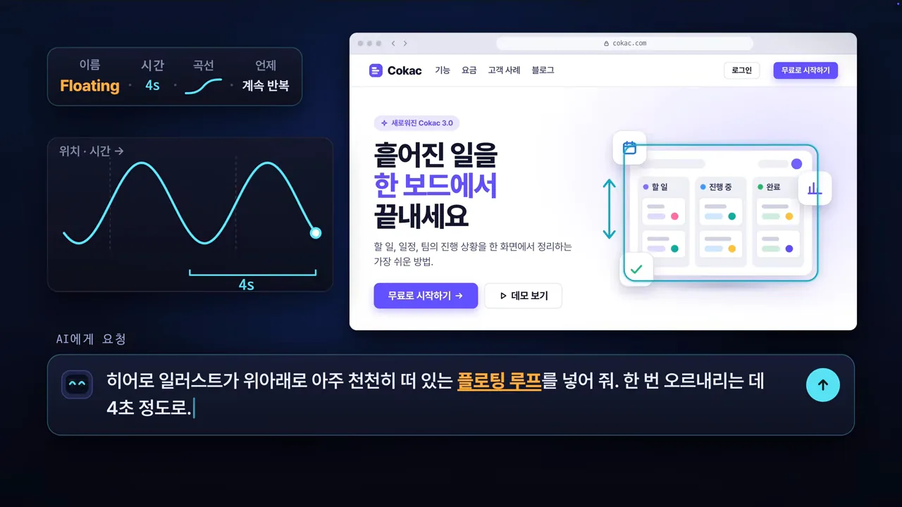
2부 글자와 그림 8가지
2부는 글자와 숫자, 선과 아이콘이 움직이는 효과 8가지예요. 앞의 4개는 글자·숫자, 뒤의 4개는 선·모양·경로를 다뤄요.
글자와 숫자
타이프라이터 효과는 타자기로 치듯 글자가 한 자씩 나타나요. 아래 화면에서 히어로 제목 '생각나는 대로 적으면 할 일이 됩니다' 끝에 세로 막대 커서가 붙어 있어요. 이 커서가 깜빡이면 지금 누군가 입력하는 것 같은 느낌이 나요.
텍스트 스크램블은 무작위 글자가 섞이다가 하나씩 제자리를 찾아 단어가 되는 효과예요. 영화 속 해커 화면처럼 기술적인 분위기를 낼 때 어울려요. 아래 화면의 보안 섹션 제목이 아직 '빈틈늪 > %탑'처럼 뒤섞인 상태로 잡혔어요.
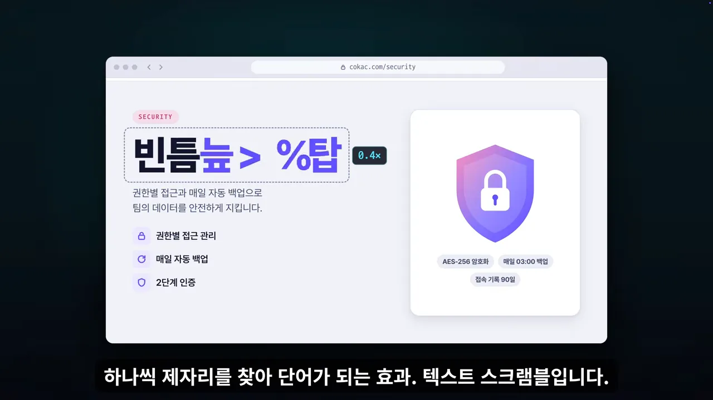
스플릿 텍스트는 제목을 글자나 단어 단위로 쪼개 하나씩 올라오게 하는 효과예요. 숨어 있던 글자가 드러난다고 텍스트 리빌이라고도 불러요. 글자 하나하나에 스태거를 건 셈이에요. 아래 화면에서 '흩어진 일을 / 한 보드에서 / 끝내세요'가 단어 덩어리마다 따로 테두리 쳐져 있어요.
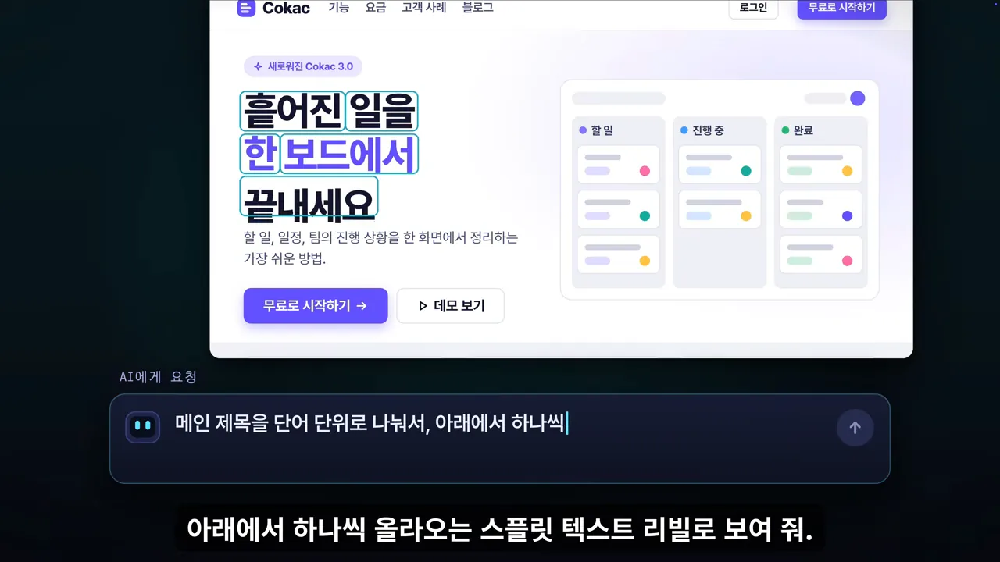
카운트업은 0에서 시작한 숫자가 촤라락 올라가 멈추는 효과예요. 가입자 수나 누적 다운로드처럼 자랑하고 싶은 숫자에 잘 맞아요. 아래 화면 왼쪽 흐린 카드가 '그냥 보여 주기', 오른쪽 밝은 카드가 Count-up이에요.
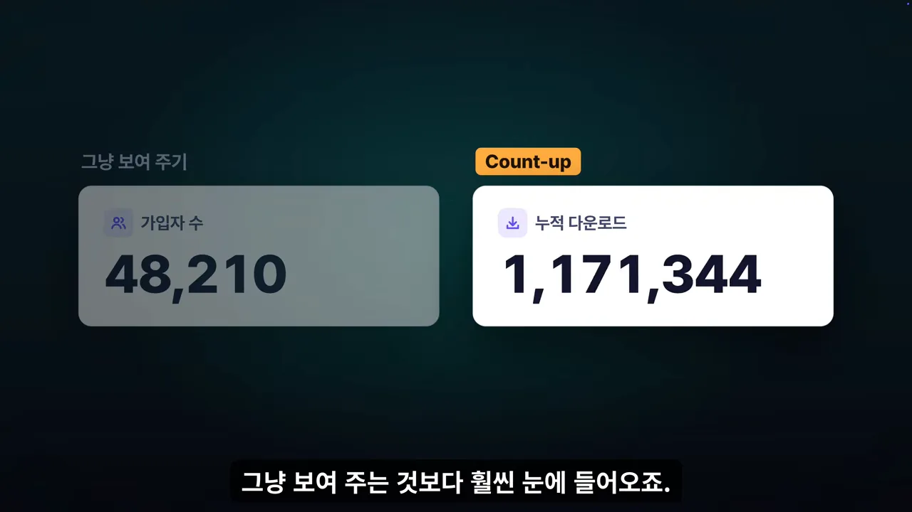
선, 모양, 경로
라인 드로잉은 안 보이던 선이 펜으로 그리듯 그려지는 효과예요. 로고, 아이콘, 그래프처럼 SVG(Scalable Vector Graphics)로 만든 그림의 선에 주로 써요. 아래 화면은 '완료한 일 추이' 그래프의 선이 왼쪽부터 그려지는 예예요.
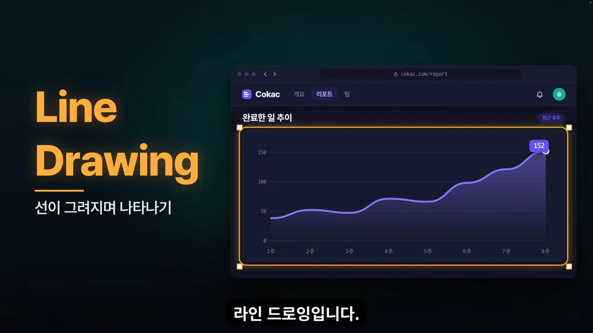
모핑은 하나의 모양이 다른 모양으로 스르르 변하는 효과예요. 대표 예가 햄버거 메뉴라고 부르는 세 줄 아이콘이 X로 바뀌는 거예요. 아래 화면 왼쪽 휴대폰은 메뉴가 열려 있고, 가운데 큰 X와 오른쪽 말풍선의 세 줄이 변신 전후예요.
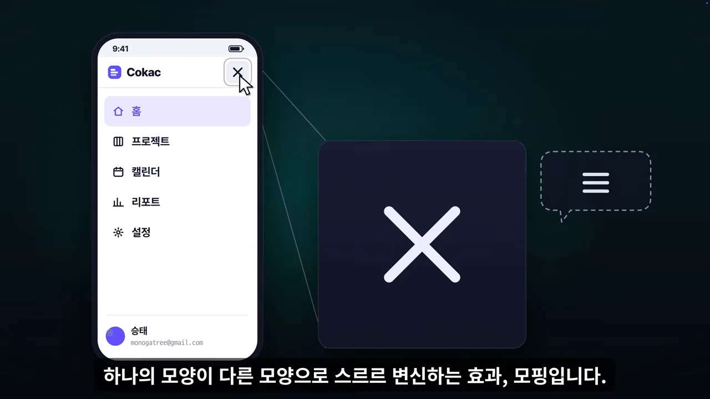
마퀴는 로고나 문구가 띠처럼 옆으로 끝없이 흘러가는 효과예요. 좁은 공간에 고객사 로고나 짧은 후기를 많이 보여 줄 때 좋아요. 아래 화면 가운데 로고 줄(fernhill, nuri studio, brightwell…)이 양 끝에서 잘려 있는 게 계속 흘러가는 중이라는 표시예요.
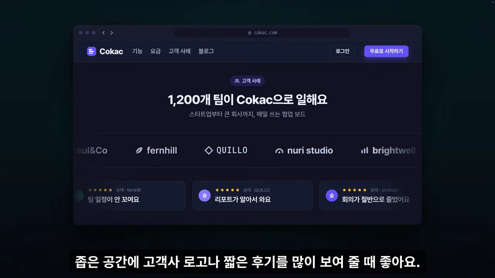
모션 패스는 직선이 아니라 정해 둔 곡선 길을 따라 날아가는 움직임이에요. 아래 화면에서 '담기' 버튼부터 오른쪽 위 장바구니 아이콘까지 보라색 점선 곡선이 그려져 있어요. 상품 이미지가 이 길을 따라 날아가요.
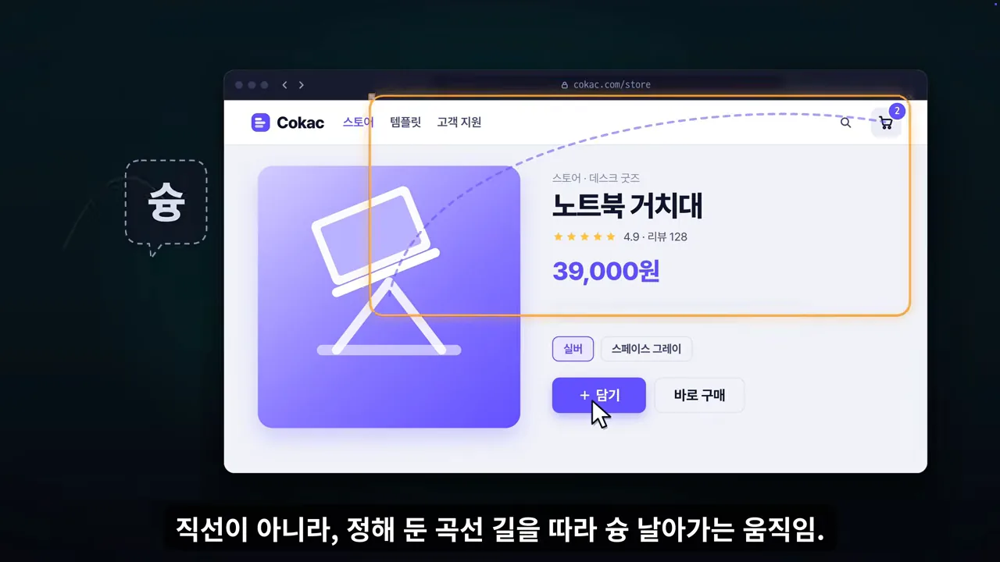
3부 화면과 마우스 8가지
3부는 화면 전체가 바뀌는 전환과, 스크롤·마우스에 반응하는 움직임 8가지예요.
화면이 바뀔 때
페이지 트랜지션은 링크를 누르면 화면이 뚝 바뀌는 대신 덮였다가 새 페이지가 나타나는 효과예요. 앞에서 본 페이드나 슬라이드를 페이지 단위로 쓰는 거예요. 아래 화면 밑 버튼 세 개가 페이드(fade), 슬라이드(slide), 와이프(wipe)예요. 화면을 쓸고 지나가는 방식이 와이프예요.
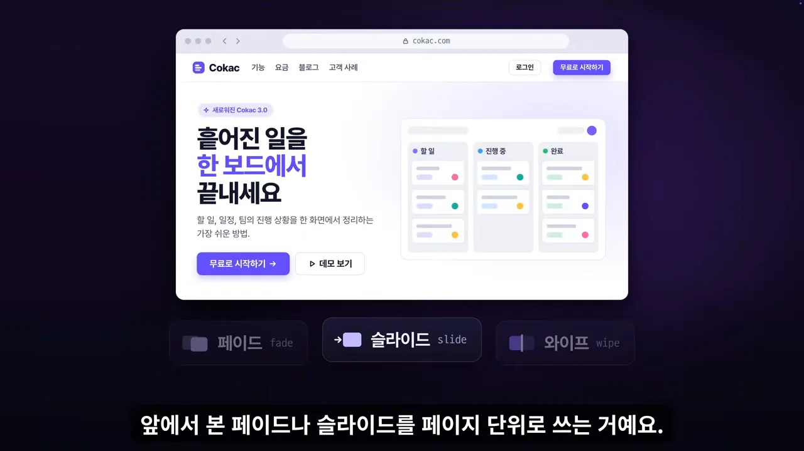
쉐어드 엘리먼트 트랜지션은 목록에서 누른 카드가 그대로 커지면서 상세 화면이 되는 효과예요. 두 화면이 같은 요소를 공유한다고 해서 붙은 이름이에요. 아래 화면에서 왼쪽 목록의 '데스크 램프' 카드에서 오른쪽 상세 화면의 큰 이미지 칸까지 주황 곡선이 이어져 있어요.
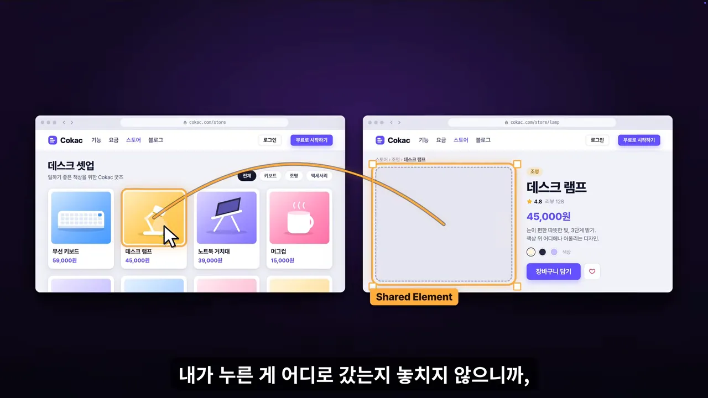
스크롤에 반응할 때
스크롤을 내리는데 화면은 그 자리에 붙잡혀 있고 안의 장면만 바뀌는 경우가 있어요. 이렇게 화면을 고정하는 게 핀, 또는 피닝이에요. 아래 화면 왼쪽 위에 Pin 라벨과 압정이 꽂힌 섹션이 고정된 화면이고, 왼쪽 '03 / 03'이 세 장면 중 마지막이라는 뜻이에요.
핀으로 스크롤에 따라 이야기를 풀어 가는 페이지를 스크롤과 스토리텔링을 합쳐 스크롤리텔링이라고 불러요. 아래 화면 오른쪽 작은 그림이 이 구조예요. '화면' 칸은 그대로 있고, 오른쪽 세로 막대 '스크롤'만 내려가요.
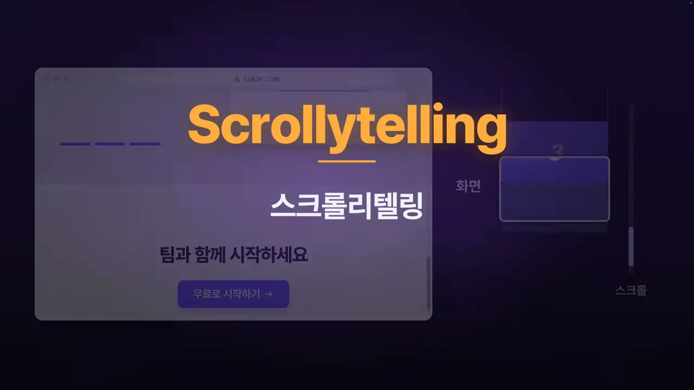
가로 스크롤은 마우스 휠은 아래로 굴리는데 화면은 옆으로 지나가는 섹션이에요. 핀의 응용이에요. 섹션을 고정해 두고 내린 만큼 안쪽 카드를 옆으로 밀어요. 아래 화면 오른쪽 작은 그림에서 압정이 꽂힌 '화면' 틀 안으로 색 카드 줄이 옆으로 지나가요.
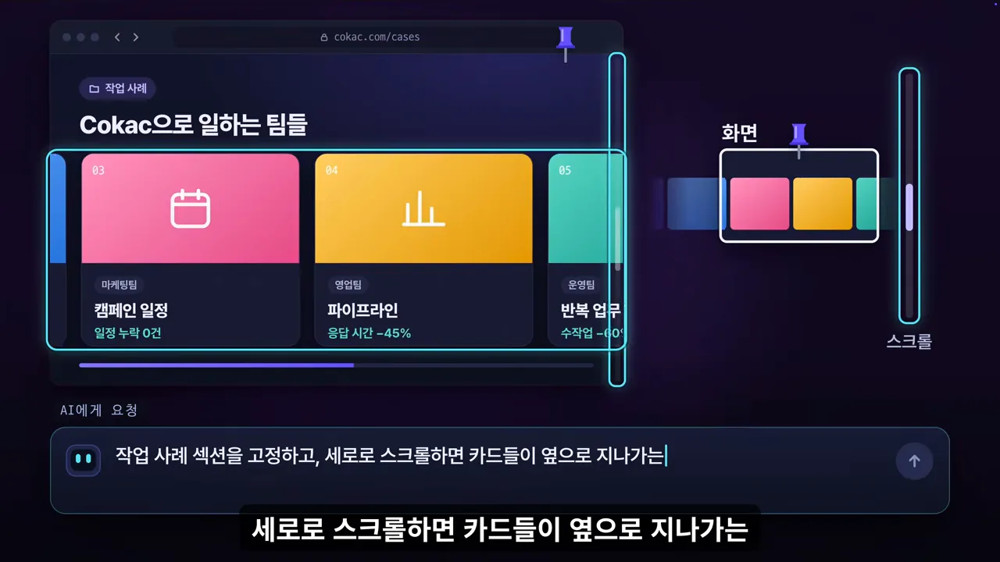
마우스에 반응할 때
마그네틱 버튼은 커서가 가까이 다가가면 버튼이 자석에 끌리듯 따라오는 효과예요. 누르기 전부터 반응해서 재미있지만, 너무 많이 따라오면 오히려 누르기 어려워요. 아래 화면 왼쪽은 최대 40px 끌려오는 경우로 '누르기 어려움', 오른쪽은 최대 10px로 '살짝만'이에요.
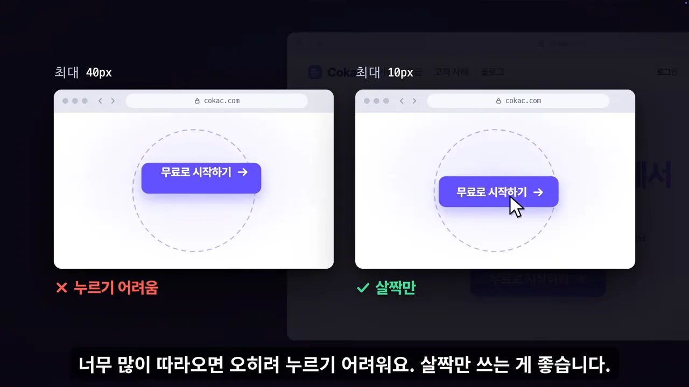
커스텀 커서는 기본 화살표 대신 작은 원이 마우스를 졸졸 따라다니는 효과예요. 커서 팔로우라고도 해요. 링크 위에서는 원이 커지거나 글자가 들어가기도 해요. 아래 화면 '디자인팀의 하루' 카드 위에 큰 원이 떠 있어요.
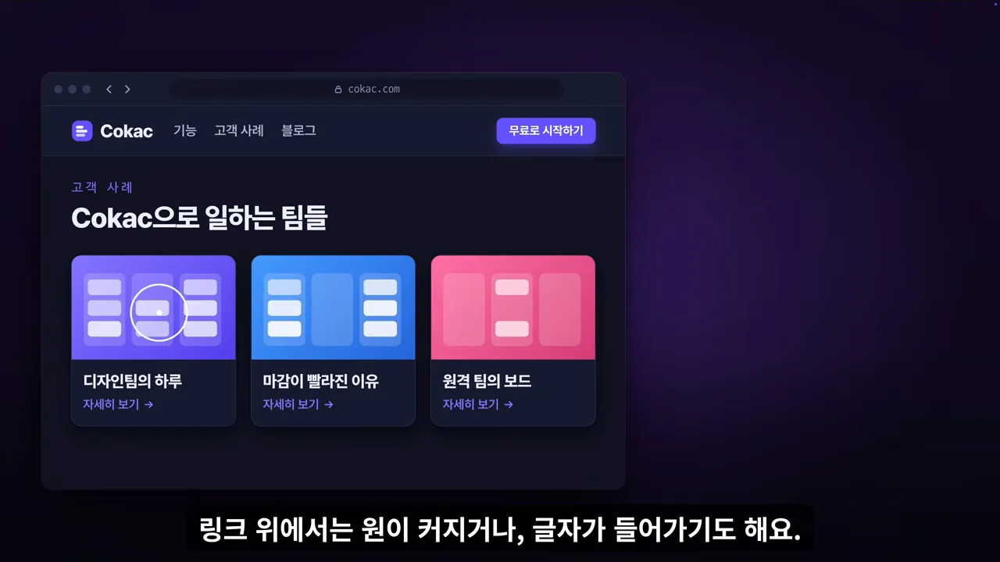
3D 틸트는 카드 위에서 마우스를 움직이면 카드가 그 방향으로 갸우뚱 기울어지는 효과예요. 반사광까지 같이 움직이면 진짜 카드를 비춰 보는 듯한 입체감이 생겨요. 아래 화면 가운데 프로 요금제 카드가 기울어져 있고, 오른쪽 칸에 '최대 10°'가 적혀 있어요.
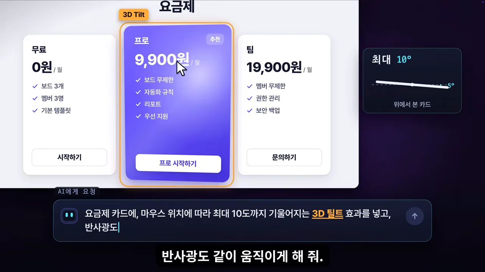
컨페티는 결제를 마치는 순간 색종이가 빵 터지는 효과예요. 아래 화면에는 가입 완료, 저장됨, 댓글 등록, 첫 결제, 파일 업로드 버튼이 있는데, 색종이는 가입 완료와 첫 결제 위에서만 터져요.
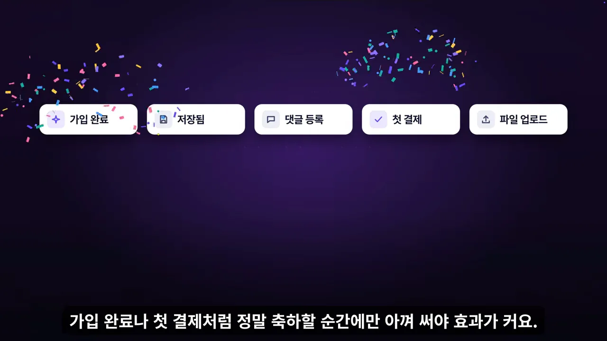
이름·속도·조건으로 부탁하기
마지막으로 오늘 본 이름들로 실제 부탁을 다시 써 봐요. 영상은 같은 랜딩 페이지를 두고 흔한 부탁과 이름으로 쓴 부탁을 나란히 비교해요.
흔한 부탁
먼저 "랜딩 페이지가 좀 살아 움직이게 해 줘. 제목은 멋있게 나오고, 숫자는 촤라락, 버튼은 뿅뿅하게." AI도 나름대로 움직임을 넣어 줘요. 아래 화면에서 페이지 위에 떠 있는 말풍선 네 개가 AI가 짐작으로 채우는 빈칸이에요. 무엇이? 어떻게? 얼마나 빨리? 언제?
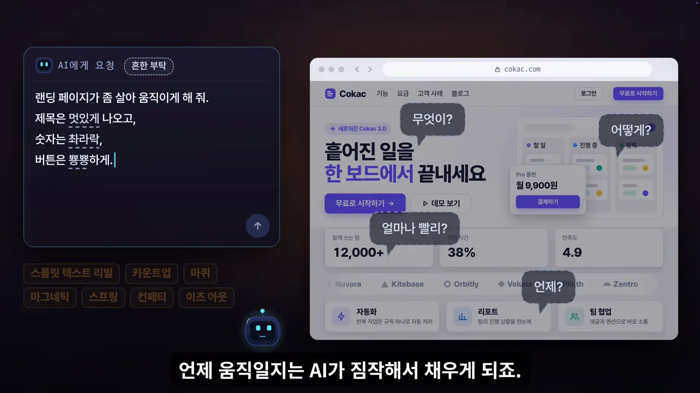
이름으로 쓴 부탁
같은 내용을 이름으로 다시 쓰면 일곱 줄이 돼요. 아래 화면 왼쪽 목록의 줄마다 선이 그어져 오른쪽 페이지의 해당 요소로 이어져요.
| 무엇이 | 영상이 쓴 이름과 조건 |
|---|---|
| 제목 | 단어 단위 스플릿 텍스트 리빌 |
| 통계 숫자 | 2초 카운트업 |
| 고객사 로고 | 마퀴 |
| CTA 버튼 | 약한 마그네틱 |
| 기능 카드 | 스프링으로 등장 |
| 첫 결제 | 컨페티 |
| 등장하는 움직임 전부 | 이즈 아웃, 0.4초 |
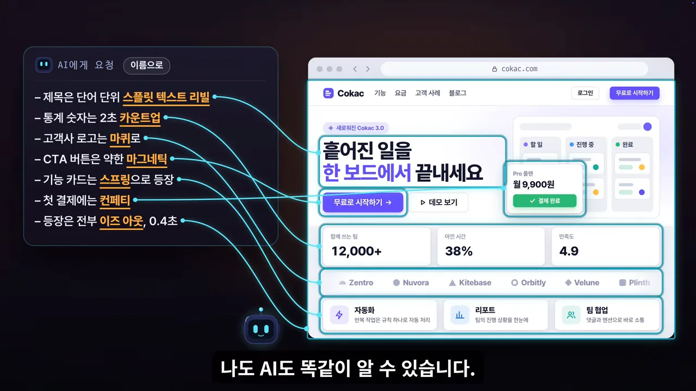
영상은 이 공식을 세 칸으로 정리해요. 효과 이름, 속도, 시작 조건이에요. 아래 화면은 스프링을 예로 들어요. 이름 칸에 Spring, 속도 칸에 시간 0.4s와 곡선, 시작 조건 칸에 '화면에 들어올 때'가 들어가 있어요.
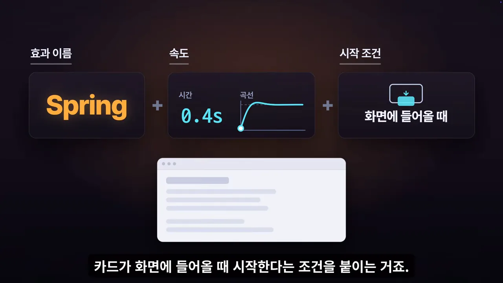
중요한 건 어려운 용어를 많이 쓰는 게 아니라, 정확한 이름에 속도와 조건을 붙이는 거예요.
— 영상 11:14
영상은 스스로 이런 문장이 '판교 사투리'처럼 들린다고 웃으며 넘어가요. 그래도 이 사투리가 AI와 나 사이의 공용어가 돼요.
움직임은 적게, 모션 감소는 꼭
움직임은 많을수록 좋은 게 아니에요. 영상은 한 화면의 주인공 움직임은 하나면 충분하다고 해요. 아래 화면 왼쪽 아래 '주인공 하나' 표시가 그 말이에요. 오른쪽에 떠 있는 '손쉬운 사용 · 동작 줄이기' 스위치는 다음 이야기로 이어져요.
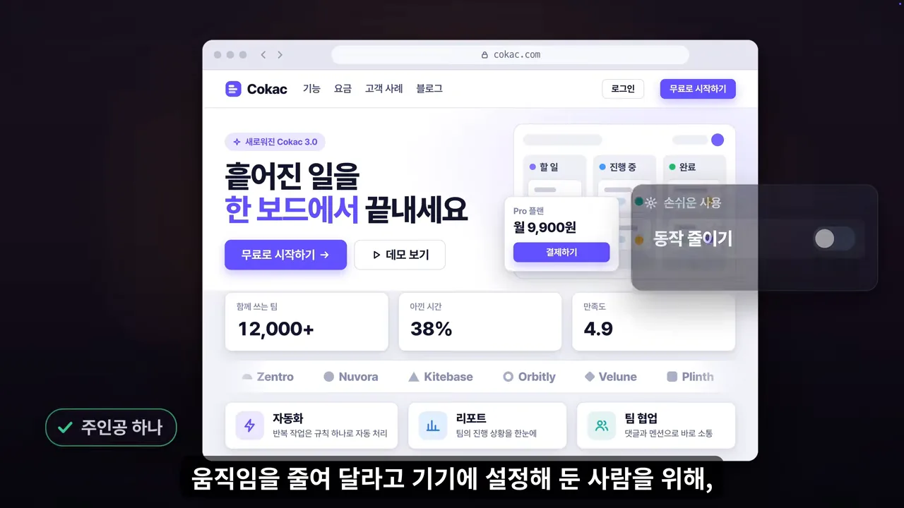
기기에서 움직임을 줄여 달라고 설정해 둔 사람도 있어요. 그래서 부탁 끝에 "모션 감소 설정을 따르게 해 줘"를 꼭 붙이라고 해요. 영상은 컨페티 예에서 이미 이 조건을 썼어요. 아래 화면 오른쪽 패널에서 '동작 줄이기'가 켜져 있고, 그 아래 prefers-reduced-motion: reduce가 적혀 있어요. 입력창 문장은 "모션 감소 설정을 켠 사용자에게는 생략하고"로 끝나요.
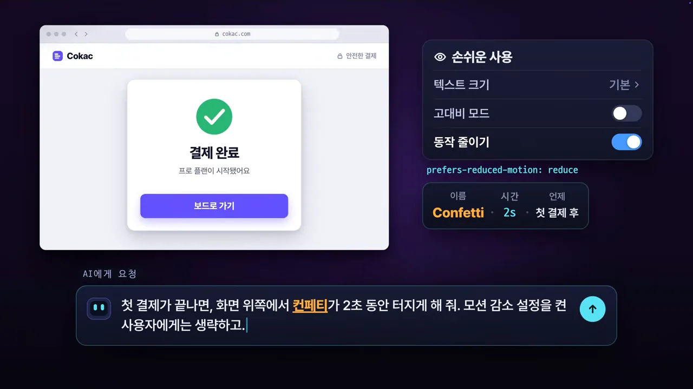
치트 시트: 24개 한눈에
영상 끝에는 24개를 한 장에 모은 움직이는 치트 시트가 나와요. 기본 1–8, 글자와 그림 9–16, 화면과 마우스 17–24의 세 열이에요. 칸마다 영어 이름 아래 짧은 한국어 별명이 붙어 있어요.
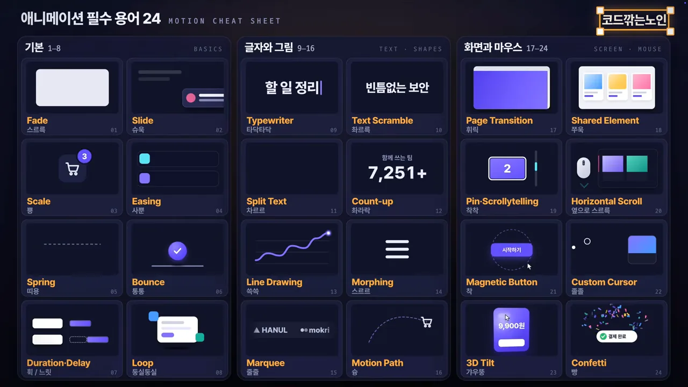
치트 시트의 내용을 표로 옮기면 아래와 같아요. 오른쪽 칸은 영상이 각 효과를 설명할 때 쓴 의성어나 비유예요.
| 묶음 | 이름 | 영상의 말로는 |
|---|---|---|
| 기본 | Fade 페이드 | 스르륵 진해지며 나타나요 |
| 기본 | Slide 슬라이드 | 화면 밖에서 슉 미끄러져 들어와요 |
| 기본 | Scale 스케일 | 뿅 커지며 톡 튀어나와요 (팝) |
| 기본 | Easing 이징 | 끝에서 사뿐히 멈춰요 |
| 기본 | Spring 스프링 | 지나쳤다가 띠용 돌아와요 |
| 기본 | Bounce 바운스 | 바닥에서 통통 튀어요 |
| 기본 | Duration·Delay 듀레이션·딜레이 | 얼마나 걸리고 얼마나 기다리나 |
| 기본 | Loop 루프 | 둥실둥실 계속 반복돼요 (플로팅) |
| 글자와 그림 | Typewriter 타이프라이터 | 타닥타닥 한 자씩 |
| 글자와 그림 | Text Scramble 텍스트 스크램블 | 촤르륵 섞이다가 단어가 돼요 |
| 글자와 그림 | Split Text 스플릿 텍스트 | 쪼개져서 차르르 올라와요 (텍스트 리빌) |
| 글자와 그림 | Count-up 카운트업 | 숫자가 촤라락 올라가요 |
| 글자와 그림 | Line Drawing 라인 드로잉 | 펜으로 그리듯 쓱쓱 |
| 글자와 그림 | Morphing 모핑 | 모양이 스르르 변신해요 |
| 글자와 그림 | Marquee 마퀴 | 띠처럼 줄줄 흘러가요 |
| 글자와 그림 | Motion Path 모션 패스 | 곡선 길을 따라 슝 |
| 화면과 마우스 | Page Transition 페이지 트랜지션 | 뚝 바뀌는 대신 휙 덮였다가 (와이프) |
| 화면과 마우스 | Shared Element 쉐어드 엘리먼트 | 카드가 그대로 쭉 커져 상세 화면이 돼요 |
| 화면과 마우스 | Pin·Scrollytelling 핀·스크롤리텔링 | 화면은 붙잡히고 장면만 착착 |
| 화면과 마우스 | Horizontal Scroll 가로 스크롤 | 휠은 아래로, 화면은 옆으로 스르륵 |
| 화면과 마우스 | Magnetic Button 마그네틱 버튼 | 자석처럼 착 따라와요 |
| 화면과 마우스 | Custom Cursor 커스텀 커서 | 작은 원이 졸졸 따라다녀요 |
| 화면과 마우스 | 3D Tilt 3D 틸트 | 갸우뚱 기울어져요 |
| 화면과 마우스 | Confetti 컨페티 | 색종이가 빵 터져요 |